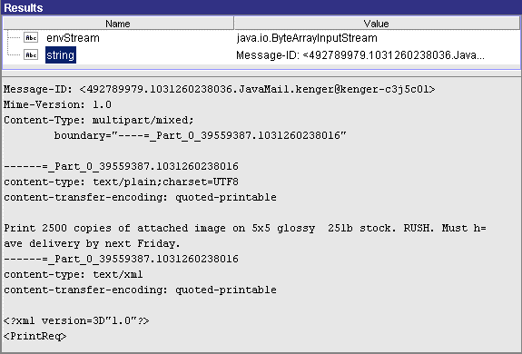

Step | Description | |
1 | This step creates an empty MIME object. It does not take any inputs. It puts an empty MIME object called mimeData in the pipeline. | |
2 | This step generates the content of the message and adds it to the mimeData object. If you view the pipeline for the addBodyPart service in this step, you will see that the stream output variable generated by the stringToStream service is linked to the content input variable. Because content contains a simple text message, the contenttype and encoding parameters are set as follows: | |
Parameter | Value | |
contenttype | text/plain;charset=UTF8 | |
encoding | quoted-printable | |
3 | This step creates an XML document from a document (IData object) in the pipeline, converts that XML document to an InputStream, and then adds the InputStream to the mimeData object. Because content contains an XML document, the contenttype and encoding parameters are set as follows: | |
Parameter | Value | |
contenttype | text/xml | |
encoding | quoted-printable | |
4 | This step gets an image file from disk and adds it to the mimeData object. Because the file is retrieved as an InputStream, it can be linked directly to the mimeData object. In this case, content is an image file (binary data), so the contenttype and encoding parameters are set as follows: | |
Parameter | Value | |
contenttype | image/gif;name="b2b.gif" | |
encoding | base64 | |
5 | This step generates the finished MIME message. It takes the mimeData object populated in steps 2–4 and produces an InputStream or a MimeMessage that contains the multipart MIME message. At this point, you could pass an envStream or mimeMessage to any process that expects a MIME message as input. | |
6 | Because you cannot view an InputStream, this example includes a step that converts envStream to a String so you can examine the finished message with Designer. This technique is useful for testing and debugging. If you examine the contents of string on the Service Result view, you will see a MIME message similar to the following:  | |